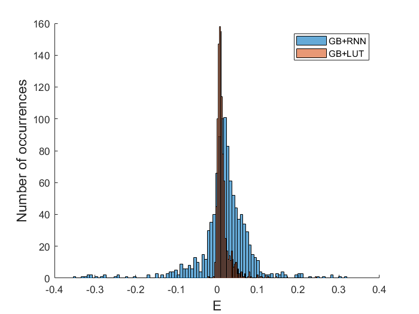
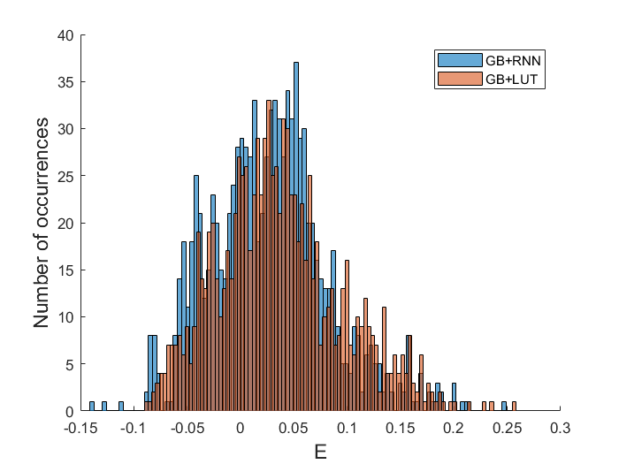
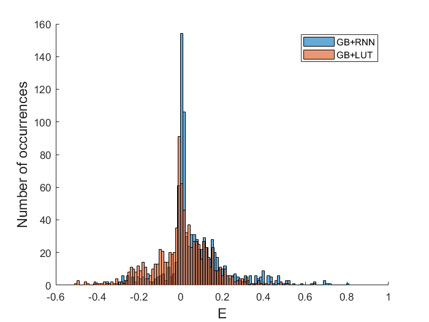
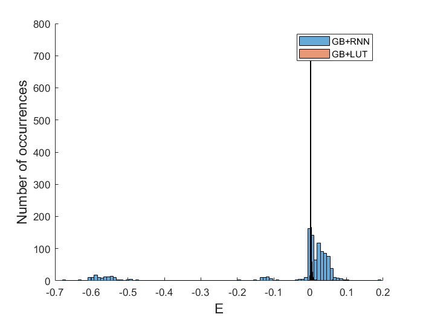

---------------------------------
2orSC, SingleClassGB, num_iterations = 10
---------------------------------
FOM SNR Power
___________ __________ _________
Mean 0.018406 0.028602 -0.063187
P(E>0) 0.74697 0.73856 0.27264
P(E>0.05) 0.22409 0.39402 0.15033
p(0.05) -0.082557 -0.18029 -0.42107
p(0.25) -0.00023683 -0.0025606 -0.1661
p(0.50) 0.019589 0.032998 -0.070038
p(0.75) 0.045885 0.083211 0.0071589
p(0.95) 0.096021 0.1788 0.27519
---------------------------------
2orSC, LUTGB, num_iterations = 10
---------------------------------
FOM SNR Power
___________ ___________ __________
Mean 0.014114 0.028448 7.2493e-05
P(E>0) 0.94678 0.94024 0.46218
P(E>0.05) 0.038282 0.13912 0.039216
p(0.05) -0.00016307 -0.00062584 -0.048317
p(0.25) 0.0047504 0.0089185 -0.027884
p(0.50) 0.0093139 0.0173 -0.0029854
p(0.75) 0.01584 0.031177 0.021989
p(0.95) 0.045079 0.096025 0.048708
---------------------------------
2orGM, SingleClassGB, num_iterations = 10
---------------------------------
FOM SNR Power
_________ _________ ________
Mean 0.026651 0.032652 1.5848
P(E>0) 0.685 0.663 0.486
P(E>0.05) 0.315 0.472 0.476
p(0.05) -0.055012 -0.45822 -0.99694
p(0.25) -0.010867 -0.023701 -0.81826
p(0.50) 0.026893 0.043228 -0.10298
p(0.75) 0.057818 0.10421 1.7065
p(0.95) 0.12525 0.25132 10.817
---------------------------------
2orGM, LUTGB, num_iterations = 10
---------------------------------
FOM SNR Power
__________ _________ ________
Mean 0.036758 0.024142 1.3199
P(E>0) 0.729 0.598 0.305
P(E>0.05) 0.359 0.421 0.286
p(0.05) -0.051786 -0.27795 -0.99225
p(0.25) -0.0028185 -0.040853 -0.92623
p(0.50) 0.031323 0.028972 -0.65098
p(0.75) 0.06948 0.094508 0.7048
p(0.95) 0.14605 0.2338 13.071
---------------------------------
3orSC, SingleClassGB, num_iterations = 10
---------------------------------
FOM SNR Power
_________ _________ ________
Mean 0.074111 0.13872 0.12244
P(E>0) 0.78501 0.85667 0.54796
P(E>0.05) 0.44542 0.46527 0.49724
p(0.05) -0.16558 -0.27658 -0.57688
p(0.25) 0.0020045 0.0069423 -0.17186
p(0.50) 0.027202 0.02655 0.046319
p(0.75) 0.13369 0.21458 0.33464
p(0.95) 0.40179 0.77249 1.0479
---------------------------------
3orSC, LUTGB, num_iterations = 10
---------------------------------
FOM SNR Power
_________ _________ _________
Mean 0.0088469 0.012661 -0.011087
P(E>0) 0.54796 0.61521 0.58545
P(E>0.05) 0.34068 0.3054 0.5634
p(0.05) -0.23319 -0.37764 -0.92613
p(0.25) -0.059597 -0.098327 -0.46533
p(0.50) 0.0087023 0.0080457 0.19194
p(0.75) 0.087793 0.10226 0.44419
p(0.95) 0.23484 0.44508 0.51993
---------------------------------
211Cascade, SingleClassGB, num_iterations = 10
---------------------------------
FOM SNR Power
__________ ___________ _________
Mean -0.062181 -0.13313 -0.36123
P(E>0) 0.69961 0.6135 0.26027
P(E>0.05) 0.10176 0.054795 0.16536
p(0.05) -0.58253 -1.033 -0.88344
p(0.25) -0.0012706 -0.00050339 -0.74962
p(0.50) 0.010206 0.00021433 -0.36753
p(0.75) 0.034453 0.0095075 0.0090307
p(0.95) 0.057529 0.051833 0.1292
---------------------------------
211Cascade, LUTGB, num_iterations = 10
---------------------------------
FOM SNR Power
__________ ___________ __________
Mean 0.0028162 0.0050109 -0.012073
P(E>0) 0.9775 0.7955 0.20939
P(E>0.05) 0.011742 0.017613 0.016634
p(0.05) 0.00016259 -9.0475e-05 -0.036438
p(0.25) 0.00045187 1.3036e-07 -0.025113
p(0.50) 0.00075805 0.00068819 -0.016455
p(0.75) 0.0019861 0.0034579 -0.0028273
p(0.95) 0.0062158 0.01205 0.023571
   